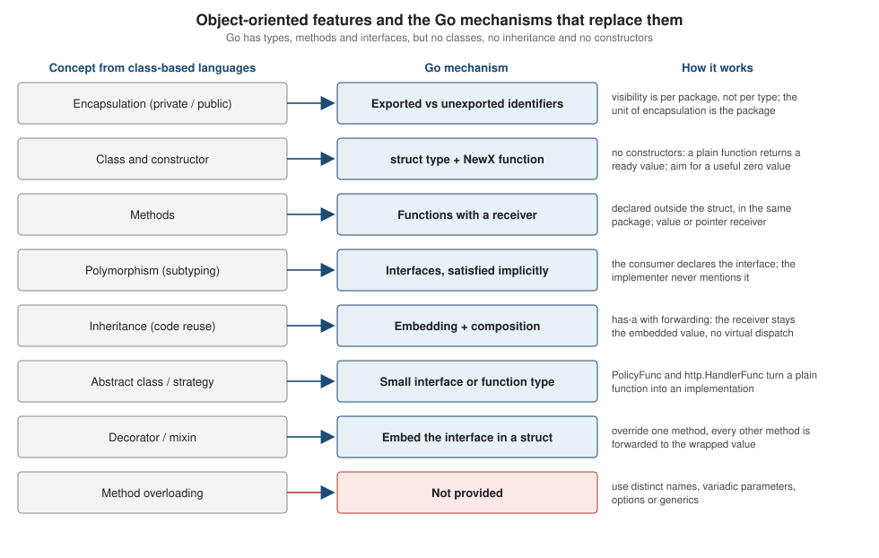

Composition and Object-Oriented Design
|
This content was generated with the assistance of AI and should be verified against the official documentation before being relied on in production. |
This page is written against Go 1.27 (go1.27.2), checked on 2026-10-18; every go.mod shown has the line go 1.27.
Go is not an object-oriented language in the class-based sense, and the language FAQ answers the question "Is Go an
object-oriented language?" with "yes and no": it has types and methods and a form of subtyping through interfaces, but it
has no type hierarchy, no class, no constructors and no inheritance. This page shows how the three things people
usually want from object orientation (encapsulation, polymorphism and reuse) are obtained with a small set of
orthogonal features, and how to design programs with them.
It builds on three earlier pages and does not repeat them:
Structs and Embedding (the mechanics of embedding, promotion,
shadowing and ambiguity),
Methods and Receivers (receivers and method sets) and
Interfaces (implicit satisfaction, interface values, any, type
switches). Readers coming from other languages can compare with the
Java inheritance and polymorphism page and with Rust’s
structs and methods and
traits, which solve the same problems with a different mix of features.
Every example was compiled, vetted with go vet and run with Go 1.27.2; the output shown is the real output, and the
compiler and vet messages are copied from real runs. The module of the examples is the shelf library catalogue:
module example.com/shelf
go 1.27Object-oriented features and their Go mechanisms
The Go FAQ explains the design: the lack of a type hierarchy makes "objects" in Go feel much more lightweight than in languages such as C++ or Java, methods can be attached to any defined type (not only structs), and the interface mechanism gives a form of subtyping without declarations. The figure maps the familiar features to what Go offers.

| Feature | Go mechanism | Notes |
|---|---|---|
Encapsulation |
Identifiers starting with an uppercase letter are exported; all others are visible only inside the declaring package |
The unit of encapsulation is the package, not the type. Two types in the same package can read each other’s unexported fields. See the spec on exported identifiers. |
Class, constructor |
A defined type plus a function conventionally named |
The language has no constructors and no |
Methods |
Functions with a receiver, declared anywhere in the type’s package |
Not nested in the type declaration. A method set is determined by the receiver kinds (see Methods and Receivers). |
Polymorphism |
Interfaces, satisfied implicitly |
No |
Reuse by inheritance |
Embedding (a form of composition) or an ordinary named field |
Forwarding, not subtyping: the outer type is not a subtype of the embedded type. |
Abstract classes, strategy |
A small interface or a function type |
Behaviour is injected as a value. |
Overloading, optional arguments |
None |
Use different names, variadic parameters, option functions or generics. |
Visibility modifiers ( |
None |
|
Encapsulation with packages
A type can only protect its invariants from code in other packages. The pattern is: unexported fields, an exported
constructor that validates, exported methods that keep the invariants. A getter is named after the field without a
Get prefix (Title, not GetTitle), a setter, if there must be one, is SetTitle.
// Package catalog models a library catalogue.
package catalog
import (
"errors"
"fmt"
)
// ErrNoTitle reports a book without a title.
var ErrNoTitle = errors.New("catalog: book needs a title")
// Book is a catalogued book. Its fields are unexported, so only this package
// can break its invariants: the title is never empty and Pages is never negative.
type Book struct {
title string
pages int
loans int
}
// NewBook is the only way for other packages to build a valid Book.
func NewBook(title string, pages int) (*Book, error) {
if title == "" {
return nil, ErrNoTitle
}
return &Book{title: title, pages: max(pages, 0)}, nil
}
// Title is a getter. Go style omits the Get prefix.
func (b *Book) Title() string { return b.title }
// Lend is the only way to change the loan counter.
func (b *Book) Lend() { b.loans++ }
func (b *Book) String() string {
return fmt.Sprintf("%s (%d pages, lent %d times)", b.title, b.pages, b.loans)
}package main
import (
"fmt"
"example.com/shelf/ex1/catalog"
)
func main() {
b, err := catalog.NewBook("Dune", 412)
if err != nil {
fmt.Println("error:", err)
return
}
b.Lend()
b.Lend()
fmt.Println(b)
fmt.Println(b.Title())
_, err = catalog.NewBook("", 10)
fmt.Println("error:", err)
}Dune (412 pages, lent 2 times)
Dune
error: catalog: book needs a titleCode in another package cannot create a Book with a bad state, and cannot even read the unexported fields. The
compiler’s messages (the second one also suggests the exported method of the same name):
package main
import (
"fmt"
"example.com/shelf/ex1/catalog"
)
func main() {
b, _ := catalog.NewBook("Dune", 412)
b.loans = 100
fmt.Println(b.title)
}./main.go:11:4: b.loans undefined (cannot refer to unexported field loans)
./main.go:12:16: b.title undefined (type *catalog.Book has no field or method title, but does have method Title)Because the unit is the package, a "private" helper type is just an unexported type in the same package, and a package
that must not be imported from outside a module tree is placed under an internal/ directory (rule introduced in
Go 1.4). There is no per-type protected level: if two packages need to
share a detail, the options are an exported API with a good name, an internal package, or merging the packages.
An exported struct with unexported fields has a consequence worth knowing: code outside the package can still declare
var b catalog.Book or write catalog.Book{} and obtain the zero value, bypassing NewBook. If the zero value is not
valid, document that, or make the zero value valid (next section), or return an interface or an unexported type from the
package.
Constructor functions and the useful zero value
Go does not have constructors, so a NewT function is just a function that returns a T or a *T. Effective Go
describes the idiom of designing a type so that its zero value needs no initialisation (sync.Mutex,
bytes.Buffer, strings.Builder, sync.WaitGroup), and falls back to a constructor only when that is not possible.
Guidelines:
-
return a pointer (
*T) when the type has mutable state, contains a lock, or is large; return a value for small immutable data; -
return an error as the last result when validation can fail (
NewBookabove, orcatalog.ParseISBN); -
initialise lazily inside methods (
if s.books == nil) when the zero value should be usable; -
a constructor that takes many optional settings uses functional options instead of a long parameter list or a configuration struct that must be filled completely.
package main
import (
"fmt"
"sort"
"sync"
)
// Shelf has a useful zero value: the zero sync.Mutex is an unlocked mutex and
// the map is created on first use, so `var s Shelf` is ready to use.
type Shelf struct {
mu sync.Mutex
books map[string]int // title -> copies
}
func (s *Shelf) Add(title string) {
s.mu.Lock()
defer s.mu.Unlock()
if s.books == nil {
s.books = make(map[string]int)
}
s.books[title]++
}
func (s *Shelf) Titles() []string {
s.mu.Lock()
defer s.mu.Unlock()
titles := make([]string, 0, len(s.books))
for t := range s.books {
titles = append(titles, t)
}
sort.Strings(titles)
return titles
}
// Server shows the functional options pattern for a constructor that has
// several optional settings.
type Server struct {
addr string
timeout int
logger func(string)
}
type Option func(*Server)
func WithTimeout(seconds int) Option { return func(s *Server) { s.timeout = seconds } }
func WithLogger(f func(string)) Option {
return func(s *Server) { s.logger = f }
}
// NewServer applies defaults first, then each option.
func NewServer(addr string, opts ...Option) *Server {
s := &Server{addr: addr, timeout: 30, logger: func(string) {}}
for _, opt := range opts {
opt(s)
}
return s
}
func main() {
var s Shelf // no constructor needed
s.Add("Dune")
s.Add("Emma")
s.Add("Dune")
fmt.Println(s.Titles(), s.books["Dune"])
a := NewServer(":8080")
b := NewServer(":9090", WithTimeout(5), WithLogger(func(m string) { fmt.Println("log:", m) }))
b.logger("started")
fmt.Println(a.timeout, b.timeout, a.addr, b.addr)
}[Dune Emma] 2
log: started
30 5 :8080 :9090Shelf embeds a mutex by name (the field mu), so Lock and Unlock are not part of its method set; this
matters, as the pitfalls section below shows. The Option type is itself a function type: the same trick as
http.HandlerFunc below. It lets the API grow without breaking callers, which is why net/http option-like APIs and
many third-party libraries use it. When a lock is present, the type must never be copied after first use, and go vet
(analyzer copylocks) reports copies; always use the pointer returned by the constructor.
Polymorphism through interfaces
Subtyping in Go is structural: a type satisfies an interface when its method set contains the interface’s methods, and nothing has to be declared. A function that takes an interface works with every present and future implementation. Interfaces are composed from smaller ones by embedding interfaces in interfaces (the spec calls the result the union of the method sets, and since Go 1.14 embedded interfaces may overlap in their methods, which older books describe as an error).
package main
import (
"fmt"
"slices"
"sort"
"strings"
)
// Small interfaces, composed by embedding other interfaces.
type Titled interface{ Title() string }
type Priced interface{ Price() float64 }
// Item is the union of the two method sets.
type Item interface {
Titled
Priced
}
type Book struct {
title string
cents int
}
func (b Book) Title() string { return b.title }
func (b Book) Price() float64 { return float64(b.cents) / 100 }
type DVD struct {
name string
cents int
mins int
}
func (d DVD) Title() string { return fmt.Sprintf("%s (%d min)", d.name, d.mins) }
func (d DVD) Price() float64 { return float64(d.cents) / 100 }
// total is polymorphic: it works with any Priced value, present or future.
func total(items []Item) (sum float64) {
for _, it := range items {
sum += it.Price()
}
return sum
}
type byTitle []Item
func (s byTitle) Len() int { return len(s) }
func (s byTitle) Less(i, j int) bool { return s[i].Title() < s[j].Title() }
func (s byTitle) Swap(i, j int) { s[i], s[j] = s[j], s[i] }
func main() {
items := []Item{
Book{"Emma", 899},
DVD{"Dune", 1500, 155},
Book{"Dune", 1099},
}
fmt.Printf("total: %.2f\n", total(items))
// sort.Reverse is a decorator: it embeds sort.Interface and overrides Less.
sort.Sort(sort.Reverse(byTitle(items)))
for _, it := range items {
fmt.Println(it.Title())
}
// The modern equivalent with generics and a comparison function.
slices.SortFunc(items, func(a, b Item) int { return strings.Compare(a.Title(), b.Title()) })
for _, it := range items {
fmt.Println(it.Title())
}
// A type switch recovers the concrete type when you really need it.
for _, it := range items {
switch v := it.(type) {
case DVD:
fmt.Println("DVD, minutes:", v.mins)
case Book:
fmt.Println("book, cents:", v.cents)
}
}
}total: 34.98
Emma
Dune (155 min)
Dune
Dune
Dune (155 min)
Emma
book, cents: 1099
DVD, minutes: 155
book, cents: 899Observations:
-
BookandDVDdo not know aboutItem,TitledorPriced. A third package could defineItemlater. -
sort.Reverseis the standard library’s own decorator: it returns a value of an unexported type that embedssort.Interfaceand overrides onlyLess. The loop withslices.SortFuncis the generic equivalent (see Generics). -
the type switch at the end is the escape hatch when the concrete type is needed. Use it sparingly: if the code switches on every implementation, the interface has the wrong shape (see Interfaces).
The usual guidance (Bodner chapter 7 and the Go code review comments) is accept interfaces, return concrete types:
parameters are interfaces so callers can pass anything suitable, results are concrete so that callers see everything
and the producer can add methods without breaking anyone. Define the interface in the package that uses it, keep it
small (the standard library’s most useful interfaces, io.Reader, io.Writer, fmt.Stringer, error, have one
method), and do not create an interface merely because a type exists.
Methods with a pointer receiver are only in the method set of the pointer type, a frequent compile error when storing a value in an interface:
package main
import "fmt"
type Titled interface{ Title() string }
type Book struct{ title string }
// Pointer receiver: only *Book has Title in its method set.
func (b *Book) Title() string { return b.title }
func show(t Titled) { fmt.Println(t.Title()) }
func main() {
b := Book{"Dune"}
show(&b) // fine
show(b) // compile error
}./main.go:17:7: cannot use b (variable of struct type Book) as Titled value in argument to show: Book does not implement Titled (method Title has pointer receiver)Dependency injection with interfaces and function types
Go programs usually do not need a dependency-injection framework (Bodner’s chapter 7 discusses Wire as an optional
code generator for large graphs). The idiom is constructor injection: a type receives its collaborators, as interface
values or function values, from the outside, and main (the composition root) wires them. The consumer declares the
interface it needs, so it has only the methods it uses, and a test can supply a two-method fake instead of the whole
catalogue.
package main
import (
"errors"
"fmt"
"time"
)
type ISBN string
type Book struct {
ISBN ISBN
Title string
}
var ErrNotFound = errors.New("book not found")
// Store is declared by its consumer (the lending service) and is as small as
// the service needs: two methods, not the whole catalogue API.
type Store interface {
Find(isbn ISBN) (Book, error)
SaveLoan(isbn ISBN, until time.Time) error
}
// Clock is a function type: the simplest possible dependency.
type Clock func() time.Time
// Service receives its collaborators through the constructor.
type Service struct {
store Store
now Clock
}
func NewService(store Store, now Clock) *Service {
return &Service{store: store, now: now}
}
func (s *Service) Lend(isbn ISBN) (time.Time, error) {
b, err := s.store.Find(isbn)
if err != nil {
return time.Time{}, fmt.Errorf("lend %q: %w", isbn, err)
}
due := s.now().AddDate(0, 0, 14)
if err := s.store.SaveLoan(b.ISBN, due); err != nil {
return time.Time{}, err
}
return due, nil
}
// memStore is a concrete implementation. It never mentions Store.
type memStore struct {
books map[ISBN]Book
loans map[ISBN]time.Time
}
func (m *memStore) Find(isbn ISBN) (Book, error) {
b, ok := m.books[isbn]
if !ok {
return Book{}, ErrNotFound
}
return b, nil
}
func (m *memStore) SaveLoan(isbn ISBN, until time.Time) error {
m.loans[isbn] = until
return nil
}
// Compile-time assertion: *memStore must implement Store.
var _ Store = (*memStore)(nil)
func main() {
store := &memStore{
books: map[ISBN]Book{"9780441172719": {"9780441172719", "Dune"}},
loans: map[ISBN]time.Time{},
}
// The production code would pass time.Now; the test passes a fixed clock.
fixed := func() time.Time { return time.Date(2026, 10, 18, 9, 0, 0, 0, time.UTC) }
svc := NewService(store, fixed)
due, err := svc.Lend("9780441172719")
fmt.Println(due.Format(time.DateOnly), err)
_, err = svc.Lend("0000000000000")
fmt.Println(err, errors.Is(err, ErrNotFound))
}2026-11-01 <nil>
lend "0000000000000": book not found trueThe line var _ Store = (*memStore)(nil) is a compile-time interface assertion: it assigns a nil *memStore to the
blank identifier typed as Store, costs nothing at run time and turns a missing or misspelled method into a compile
error at the implementation, not at some distant call site. The Clock function type is the lightest possible
dependency: tests pass a fixed clock, the program passes time.Now. A test with a hand-written fake needs no mocking
framework:
package main
import (
"errors"
"testing"
"time"
)
// fakeStore is a hand-written test double; no mocking framework is needed.
type fakeStore struct {
findErr error
saved map[ISBN]time.Time
}
func (f *fakeStore) Find(isbn ISBN) (Book, error) {
if f.findErr != nil {
return Book{}, f.findErr
}
return Book{ISBN: isbn, Title: "Dune"}, nil
}
func (f *fakeStore) SaveLoan(isbn ISBN, until time.Time) error {
f.saved[isbn] = until
return nil
}
func TestServiceLend(t *testing.T) {
fixed := func() time.Time { return time.Date(2026, 1, 1, 0, 0, 0, 0, time.UTC) }
t.Run("saves a two-week loan", func(t *testing.T) {
store := &fakeStore{saved: map[ISBN]time.Time{}}
due, err := NewService(store, fixed).Lend("978")
if err != nil {
t.Fatal(err)
}
if want := time.Date(2026, 1, 15, 0, 0, 0, 0, time.UTC); !due.Equal(want) || !store.saved["978"].Equal(want) {
t.Errorf("due = %v, saved = %v, want %v", due, store.saved["978"], want)
}
})
t.Run("propagates not found", func(t *testing.T) {
store := &fakeStore{findErr: ErrNotFound}
_, err := NewService(store, fixed).Lend("978")
if !errors.Is(err, ErrNotFound) {
t.Errorf("err = %v, want ErrNotFound", err)
}
})
}go test -v=== RUN TestServiceLend
=== RUN TestServiceLend/saves_a_two-week_loan
=== RUN TestServiceLend/propagates_not_found
--- PASS: TestServiceLend (0.00s)
--- PASS: TestServiceLend/saves_a_two-week_loan (0.00s)
--- PASS: TestServiceLend/propagates_not_found (0.00s)
PASS
ok example.com/shelf/ex3 0.075sSource: testing package
The adapter pattern: function types with methods
A function type is a type like any other and can have methods. A one-method interface can therefore be implemented by
a function type whose method calls the function itself. The standard library does this for http.Handler
(http.HandlerFunc), and the pattern turns every plain function into an implementation. The same shape gives the
decorator (middleware): a function that takes a handler and returns a handler.
package main
import (
"fmt"
"net/http"
"net/http/httptest"
"strings"
)
// Policy is an interface with one method.
type Policy interface {
Allow(copies, loans int) bool
}
// PolicyFunc adapts an ordinary function to Policy, exactly as
// http.HandlerFunc adapts a function to http.Handler.
type PolicyFunc func(copies, loans int) bool
func (f PolicyFunc) Allow(copies, loans int) bool { return f(copies, loans) }
func lendable(p Policy, copies, loans int) string {
if p.Allow(copies, loans) {
return "yes"
}
return "no"
}
// logging is a decorator: it takes a Handler and returns a Handler.
func logging(next http.Handler, out *strings.Builder) http.Handler {
return http.HandlerFunc(func(w http.ResponseWriter, r *http.Request) {
fmt.Fprintf(out, "%s %s\n", r.Method, r.URL.Path)
next.ServeHTTP(w, r)
})
}
func main() {
maxTwo := PolicyFunc(func(copies, loans int) bool { return loans < copies && loans < 2 })
fmt.Println(lendable(maxTwo, 3, 1), lendable(maxTwo, 3, 2))
var log strings.Builder
hello := http.HandlerFunc(func(w http.ResponseWriter, r *http.Request) {
fmt.Fprintln(w, "hello from", r.URL.Path)
})
srv := logging(hello, &log)
rec := httptest.NewRecorder()
srv.ServeHTTP(rec, httptest.NewRequest(http.MethodGet, "/books", nil))
fmt.Print(rec.Body.String())
fmt.Print(log.String())
}yes no
hello from /books
GET /booksSource: net/http: HandlerFunc
PolicyFunc is the same adapter for the example’s own Policy interface. httptest.NewRecorder and
httptest.NewRequest make the handler testable without a network. The request-routing and middleware details of
net/http are on net/http Clients and Servers.
Decorating behaviour by embedding an interface
Embedding an interface type in a struct gives the struct every method of the interface, forwarded to whatever value is stored in the embedded field. The struct then overrides only the methods it wants to change. This is the Go form of the decorator pattern (and of a partial "subclass" for testing: embed the interface, override one method, leave the others to panic if called).
package main
import (
"fmt"
"strings"
)
type Book struct{ ISBN, Title string }
// Store is the interface being decorated.
type Store interface {
Find(isbn string) (Book, bool)
Add(b Book)
Len() int
}
type memStore struct{ books map[string]Book }
func newMemStore() *memStore { return &memStore{books: map[string]Book{}} }
func (m *memStore) Find(isbn string) (Book, bool) { b, ok := m.books[isbn]; return b, ok }
func (m *memStore) Add(b Book) { m.books[b.ISBN] = b }
func (m *memStore) Len() int { return len(m.books) }
// loggingStore embeds the Store *interface*. Every method of Store is promoted
// and forwarded to the wrapped value; only Add is overridden.
type loggingStore struct {
Store
log *strings.Builder
}
func (l loggingStore) Add(b Book) {
fmt.Fprintf(l.log, "add %s\n", b.ISBN)
l.Store.Add(b) // call the wrapped implementation explicitly
}
func use(s Store) {
s.Add(Book{"1", "Dune"})
s.Add(Book{"2", "Emma"})
_, ok := s.Find("1")
fmt.Println("found 1:", ok, "len:", s.Len())
}
func main() {
var log strings.Builder
use(loggingStore{Store: newMemStore(), log: &log})
fmt.Print(log.String())
// A nil embedded interface compiles but fails at run time.
defer func() { fmt.Println("recovered:", recover()) }()
var broken loggingStore
broken.Len()
}found 1: true len: 2
add 1
add 2
recovered: runtime error: invalid memory address or nil pointer dereferenceSource: Effective Go: Embedding
Points to remember:
-
the embedded interface field is nil in the zero value, so calling a promoted method on
var broken loggingStorecompiles and panics at run time, as the last line of the output shows. Constructors must always set the field; -
the wrapped call must be written explicitly (
l.Store.Add(b)); there is nosuper; -
the decorator also satisfies
Store, so decorators nest,loggingStore{Store: loggingStore{Store: mem}}, and can be stacked at the composition root.
Reuse by embedding a concrete type
Embedding a struct promotes its fields and methods to the outer type, so any type that embeds Audit satisfies
Toucher. This is reuse without a hierarchy: Book and Member share behaviour without sharing a base type. A
named field gives the same reuse without widening the API, with the forwarding written by hand.
package main
import (
"fmt"
"time"
)
// Audit is reusable behaviour: a timestamp and who changed the record last.
type Audit struct {
UpdatedAt time.Time
UpdatedBy string
}
func (a *Audit) Touch(by string, at time.Time) { a.UpdatedBy, a.UpdatedAt = by, at }
// Toucher is what callers need. Any type that embeds Audit satisfies it,
// because Touch is promoted into its method set.
type Toucher interface {
Touch(by string, at time.Time)
}
type Book struct {
Audit
Title string
}
type Member struct {
Audit
Name string
}
// Loan reuses Audit through a named field and forwards explicitly, so
// Touch is *not* part of Loan's API.
type Loan struct {
audit Audit
ISBN string
}
func (l *Loan) Renew(by string, at time.Time) { l.audit.Touch(by, at) }
func main() {
at := time.Date(2026, 10, 18, 12, 0, 0, 0, time.UTC)
b := &Book{Title: "Dune"}
m := &Member{Name: "Ann"}
for _, t := range []Toucher{b, m} {
t.Touch("librarian", at)
}
fmt.Println(b.UpdatedBy, b.UpdatedAt.Format(time.DateOnly))
fmt.Println(m.UpdatedBy, m.Audit.UpdatedAt.Format(time.DateOnly))
l := &Loan{ISBN: "978"}
l.Renew("ann", at)
fmt.Println(l.audit.UpdatedBy)
_, isToucher := any(l).(Toucher)
fmt.Println("Loan is a Toucher:", isToucher)
}librarian 2026-10-18
librarian 2026-10-18
ann
Loan is a Toucher: falseChoose embedding when the outer type really should expose the inner type’s whole API and be usable wherever that
API is expected. Choose a named field when the relationship is an implementation detail: Loan is not a Toucher.
Since Go 1.27, a composite literal may also name a promoted field directly, for example Book{UpdatedBy: "ann"}; this
is covered, with its rules, on Structs and Embedding.
Pitfalls: embedding is not inheritance
Treating embedding as a replacement for subclassing leads to four recurring problems. The mechanism is explained in Structs and Embedding; here are the design consequences.
No virtual dispatch. A promoted method runs with the embedded value as its receiver, so it cannot call an "overriding" method of the outer type. The template method pattern therefore does not work:
package main
import "fmt"
// Animal-style "base class" with a method that calls another method.
type Report struct{}
func (Report) Title() string { return "generic report" }
func (r Report) Render() string {
// r is a Report. It can never be a LoanReport, so this always calls Report.Title.
return "== " + r.Title() + " =="
}
type LoanReport struct {
Report
}
// Title "overrides" the promoted method for callers that use LoanReport directly...
func (LoanReport) Title() string { return "loan report" }
// ...but Render, promoted from Report, still calls Report.Title.
func main() {
l := LoanReport{}
fmt.Println(l.Title())
fmt.Println(l.Render())
// The fix: pass the varying behaviour in explicitly, via an interface or function.
fmt.Println(render(l))
}
type Titler interface{ Title() string }
func render(t Titler) string { return "== " + t.Title() + " ==" }loan report
== generic report ==
== loan report ==The FAQ’s answer is the fix shown in render: accept an interface (or a function) and pass the varying behaviour in.
Leaky API. Embedding exports everything. type Counter struct { sync.Mutex; n int } makes Lock and Unlock
part of Counter's public method set, so callers can lock it and break its invariants, and the API cannot change
without breaking them. Use a named unexported field (mu, as in Shelf above). A struct with an embedded lock also
must not be copied; go vet says:
package main
import (
"fmt"
"sync"
)
type Counter struct {
sync.Mutex
n int
}
func report(c Counter) { fmt.Println(c.n) }
func main() {
var c Counter
report(c)
}./main.go:13:15: report passes lock by value: example.com/shelf/bad3.Counter
./main.go:17:9: call of report copies lock value: example.com/shelf/bad3.CounterSource: cmd/vet
Silently promoted methods. A promoted method becomes part of the outer type’s method set, including methods that
other packages detect through interfaces. Embedding a type that has MarshalJSON, String, Error or Write changes
how encoding/json, fmt and io treat the outer type:
package main
import (
"encoding/json"
"fmt"
"sync"
)
// Counter embeds sync.Mutex to save typing, which exports Lock and Unlock.
type Counter struct {
sync.Mutex
n int
}
func (c *Counter) Inc() { c.Lock(); c.n++; c.Unlock() }
// SafeCounter keeps the mutex in a named, unexported field instead.
type SafeCounter struct {
mu sync.Mutex
n int
}
func (c *SafeCounter) Inc() { c.mu.Lock(); c.n++; c.mu.Unlock() }
type Audit struct {
CreatedBy string
}
func (a Audit) MarshalJSON() ([]byte, error) {
return []byte(`"audit-only"`), nil
}
type Book struct {
Audit // promotes MarshalJSON to Book!
Title string
}
func main() {
var c Counter
c.Lock() // part of the public API of Counter, probably unintended
c.Unlock()
// Embedding promotes MarshalJSON, so encoding/json uses it for the whole Book.
out, _ := json.Marshal(Book{Audit{"ann"}, "Dune"})
fmt.Println(string(out))
}"audit-only"Source: encoding/json: Marshaler
Here the whole Book is encoded as "audit-only", losing the title: the promoted MarshalJSON of the embedded
Audit implements json.Marshaler for Book. A named field (or defining MarshalJSON on Book) avoids it.
Ambiguity and shadowing. If two embedded types at the same depth have the same method, a call is ambiguous and the
program does not compile unless the outer type defines the method itself. A name in the outer type shadows the
embedded one (see the structs page for runnable examples). A nil pointer in an embedded *T field panics when a
promoted method touches a field of T.
Design guidelines
-
Start with concrete types and functions; extract an interface when a second implementation or a test needs it.
-
Keep interfaces small and define them where they are used. Prefer
io.Reader-style single-method interfaces and compose them (io.ReadWriter). -
Return concrete types, accept interfaces, and add a compile-time assertion for each interface a type is meant to satisfy.
-
Prefer composition with a named field. Embed when promotion is the point (mixins like
Audit, decorators, wrapper types such assort.Reverse). -
Make the zero value useful; otherwise provide a
NewTthat returns a ready value and document that the zero value is not valid. -
Pass behaviour as function values when a one-method interface would be over-engineering (
slices.SortFunc,http.HandlerFunc,Option). -
Generic methods (new in Go 1.27) cannot be used to satisfy an interface, because interface methods cannot have their own type parameters; model such operations with an interface of concrete methods or with a generic function. See Generics.
-
Idiomatic naming and package layout are on Idioms, Style and Code Review; the usual mistakes are on Common Mistakes and Gotchas.
Where the books are outdated or wrong
Bodner’s chapter 7 is the best treatment of this topic in either book: it explains that type declarations are not
inheritance, that embedding is composition, that interfaces should be small and consumer-defined, and that the
constructors-return-structs rule matters. Its examples are still correct. What it predates: the any alias (Go 1.18),
which replaces the empty interface type spelled out in full in its empty-interface discussion; generics, which change some of the "use an interface for
code reuse" advice (a generic container or slices.SortFunc is now often better than an interface); sort.Slice and
slices.SortFunc instead of implementing sort.Interface by hand; per-iteration loop variables (Go 1.22); and the Go
1.27 generic methods, which do not satisfy interfaces.
Vivien’s chapter 8 gives a mapping table of object-oriented features to Go mechanisms, which the figure above updates. It is a good introduction to embedding and to interface subtyping, but it was written for Go 1.6: it states that an interface cannot embed interfaces with overlapping methods (allowed since Go 1.14), spells out the empty interface type throughout, and describes the empty interface as the way to write "generic" code, which type parameters now do safely.
Version notes
-
Go 1.14: interfaces may embed interfaces with overlapping method sets.
-
Go 1.18:
any; type parameters (see the generics page). -
Go 1.21:
slices.SortFuncandcmp.Comparereplace most hand-writtensort.Interfacetypes. -
Go 1.22: per-iteration loop variables; method patterns in
http.ServeMuxreduce the need for router wrappers. -
Go 1.27: generic methods (they do not implement interface methods); promoted-field keys in composite literals.